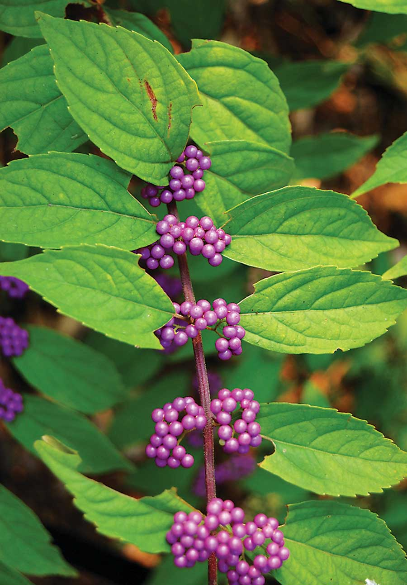

Warm weather brings out the big three of biting bugs: mosquitoes that transmit West Nile virus, deer ticks that carry Lyme disease and, in warm climates, fire ants that can quickly take over your yard. Instead of using toxic DEET to protect yourself, wouldn’t it be great to use leaves gathered from a native shrub?
This is exactly what you can do with beautyberry (Callicarpa americana), a deciduous shrub of the southeastern woods best known for its braceletlike clusters of showy purple berries that ripen in fall. Compounds found in beautyberry leaves have shown amazing pest-repellent properties, proving the worth of the centuries-old practice of placing leaves under mule harnesses to deter biting insects.
In 2006, researchers at the U.S. Department of Agriculture’s Natural Products Utilization Research Unit in Oxford, Miss., found that extracts from beautyberry leaves could match DEET for repelling mosquitoes. The next year, experiments showed that the active ingredients from the leaves (callicarpenal and intermedeol) provided 100-percent repellency of black-legged ticks for three hours. In 2008, the four-person research team, headed by chemist Charles Cantrell in Mississippi and entomologist Jerome Klun in Maryland, published research that added fire ants to the list of pests repelled by essential oil distilled from beautyberry leaves.
Cantrell says toxicity testing is needed to evaluate the safety of applying potent beautyberry compounds to human skin. “Plants containing these compounds have long been used as folk remedies with no ill effects that we know of, so I would not anticipate any harmful effects when plants are used in the traditional way,” he says. Fresh green leaves, crushed and rubbed on people or pets, often repel insects for a couple of hours.
American beautyberry is easily grown in moist, partial shade in Zones 7 to 9, and in protected sites near buildings in Zone 6. Among ornamental species, Cantrell notes that leaves of Japanese beautyberry (C. japonica, hardy to Zone 5) contain both compounds.
Container-grown plants of American beautyberry are widely available from native plant nurseries. Visit the Mother Earth News Seed and Plant Finder to find a source near you.
|
 DEREK RAMSEY Not just pretty: Beautyberry protects against biting bugs. |
|
|